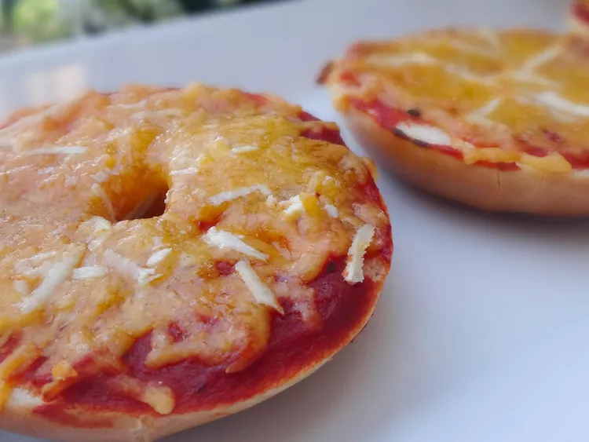

Pizza Bagels

My kids say it the greatest burn of their life!
You ever gobble up a scorching hot pizza bagel so fast and the only way to
stop the pain is keep munching while make a murflmurfle sound? LOOK NO
FURTHER!
Ingredients
- 8 mini bagels, split
- ¼ cup pizza sauce
- ⅓ cup shredded pizza cheese blend
- 16 slices turkey pepperoni (such as Hormel®)
Recipe Instructions
-
Preheat oven to 425 degrees F (220 degrees C). Line a baking sheet with
aluminum foil.
-
Arrange bagels on prepared baking sheet, cut sides up. Spoon a thin
layer of pizza sauce over each bagel half and sprinkle with pizza
cheese. Place 2 pepperoni slices on each bagel.
-
Bake in the preheated oven until cheese is melted and pepperoni is
lightly browned, about 6 minutes.